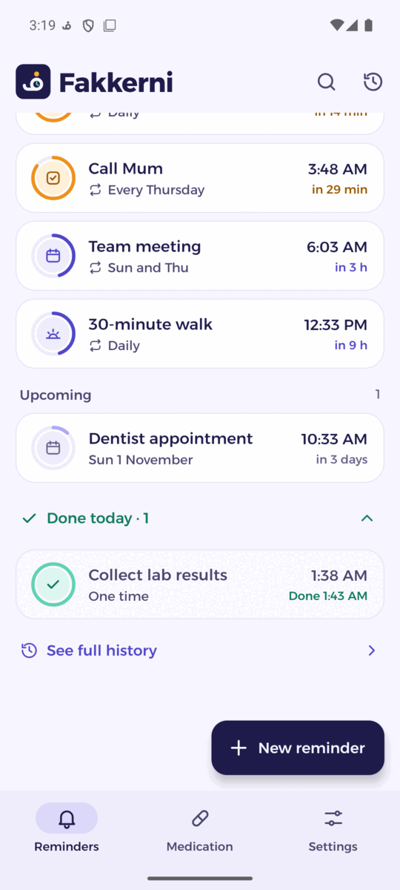
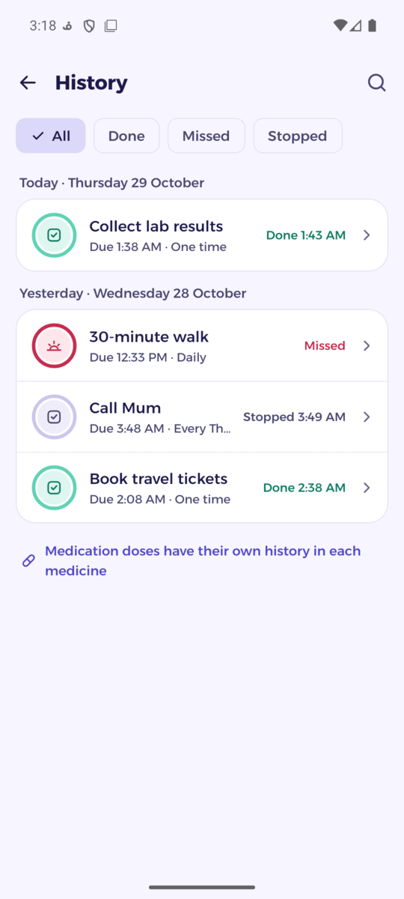
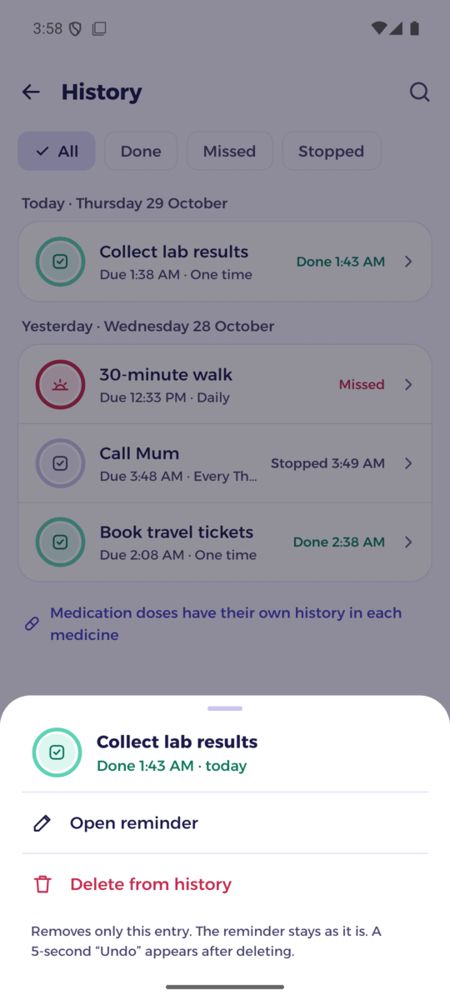
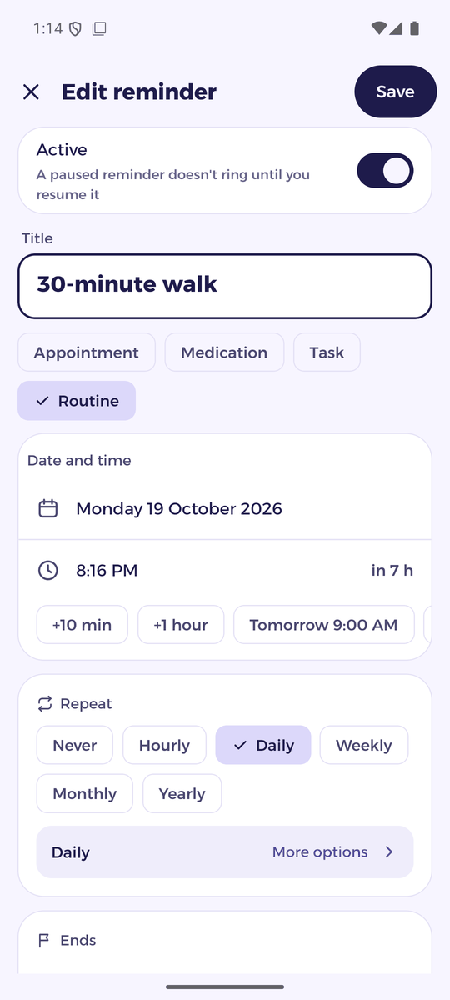
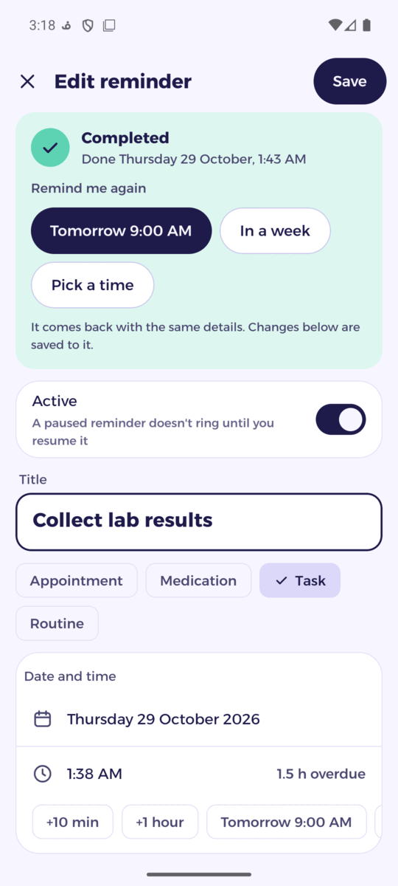
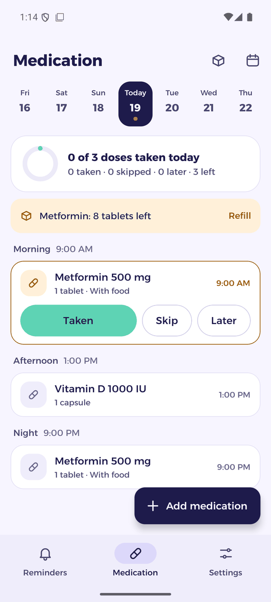
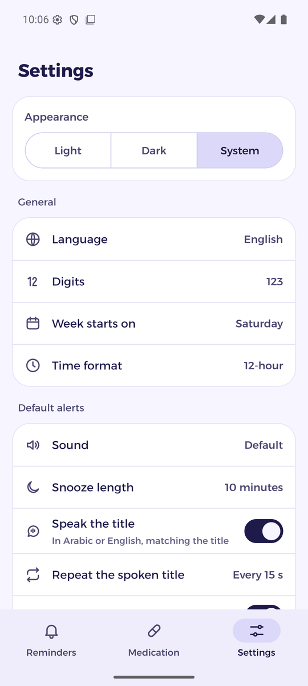
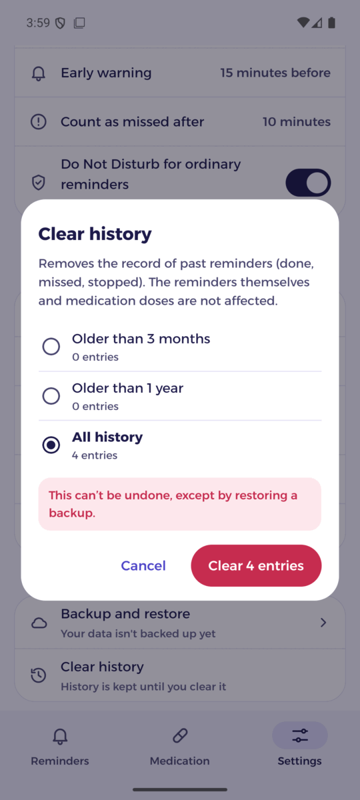
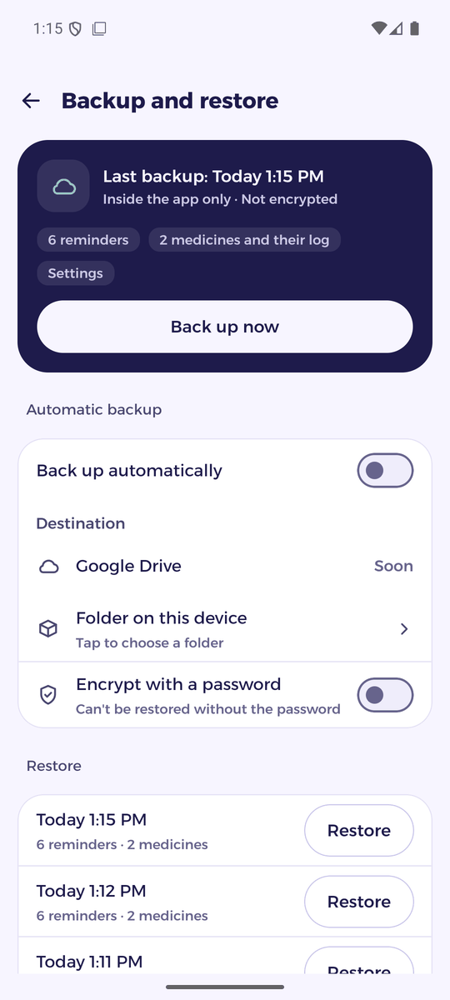

Everything that matters, on time
Fakkerni (فكّرني, “remind me”) rings your reminders and medicine doses on time, even offline and right after a restart. Made Arabic first, with full English.
- No account
- No ads
- No tracking
- Works offline
- Arabic and English
Built to ring, every time
Reminders and medicines on alarms that keep working when the app is closed, the phone is asleep, or it has just restarted.
Alarms that ring
Full-screen alarms over the lock screen, and over other apps while you use the phone, with snooze, early warnings and repeats from every few hours to every year.
Hear the title
The reminder is spoken aloud in its own language, Arabic or English, once or every few seconds.
Medication made simple
Each dose has its own alarm: taken, later or skipped. Stock tracking, refill alerts and a monthly history.
Backups in your Drive
Back up to a “Fakkerni backups” folder in your own Google Drive or a folder on your phone, with optional password encryption.
Reliable after a restart
Alarms ring even after the phone restarts, before you unlock it, and Fakkerni warns you if a battery saver holds it back.
Arabic first
Right-to-left layout, Arabic digits and plurals, Saturday-first weeks, light and dark themes.
A closer look
Ten main screens, in light and dark.









Install in a minute
Fakkerni isn't on Google Play yet. Download the APK and install it directly.
Fakkerni for Android
The latest version, ready to install.
Download for Android- Version
- Latest
- Size
- ~60 MB
- Requires
- Android 8.0+
What's new in
SHA-256:
Download the APK
Tap Download on your Android phone. The file is called fakkerni.apk.
Allow the install
Open the file. If Android asks, allow installing apps from your browser or file manager.
Open Fakkerni
Follow the short setup: language, notifications and alarm permissions. Allow “Show alarms over other apps” so alarms take the whole screen even while you use the phone. Already have a backup? Choose “I have a backup, restore”.
Google Play Protect may warn that the app comes from an unknown developer. That's because Fakkerni isn't on Google Play yet. Tap “More details” › “Install anyway”.
Private by design
Your reminders and medicines are personal. Fakkerni keeps them on your phone, and a backup goes only where you choose.
Read the privacy policy- No account and no sign-up
- No servers, analytics or ads
- Data stays on your phone
- Optional backups to your own Google Drive or a folder, encrypted if you like
Questions
Is Fakkerni free?
Yes. No ads, no subscriptions and no in-app purchases.
Does it work without internet?
Yes. Alarms, reminders and medication work fully offline. Internet is only used if you back up to Google Drive.
Where are my backups?
Wherever you choose: a “Fakkerni backups” folder in your own Google Drive, a folder on your phone, or inside the app. You can encrypt them with a password.
Why isn't it on Google Play?
Fakkerni is still being tested. It will come to Google Play later; until then you can install the APK from this page.
Which phones are supported?
Android 8.0 or later. Some brands limit apps in the background; Fakkerni's setup shows how to keep alarms on time on your phone.
Why does an alarm show only as a banner?
While you use your phone, Android shows alarms as a banner unless the app may display over other apps. Turn on Settings › Permissions › “Show alarms over other apps” in Fakkerni, and alarms take the whole screen.